Ichikawa, Hyogo: things to do, food and stays
Ichikawa · Hyogo
Ichikawa
Highlighted on the Hyogo map.
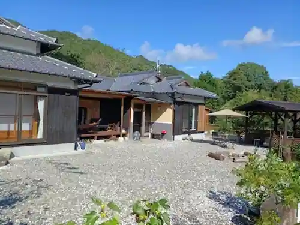
Stay
市川 癒しの家 ＾
Ichikawa Iyashi No Ie ^
Dining
いろり 勢賀の郷
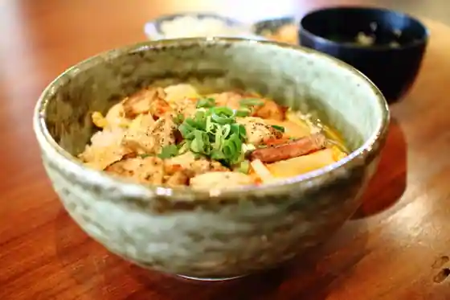
Irori Sei Ga No Sato
にゅうにゅう工房
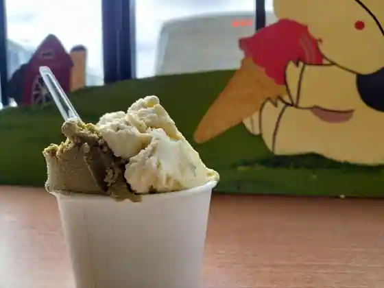
Nyunyu Kobo
風和里
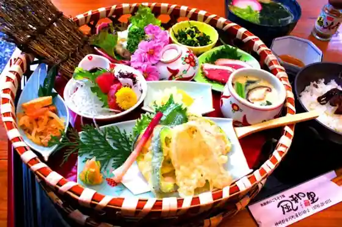
Kaze Wa Sato
市川サービスエリア下り線 売店
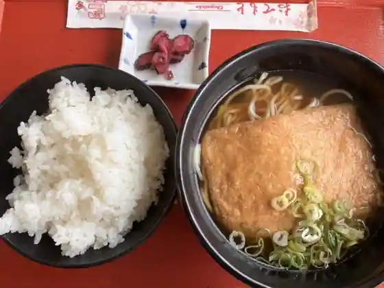
Ichikawa Sabisueria Kudari Sen Bai
せせらぎ亭
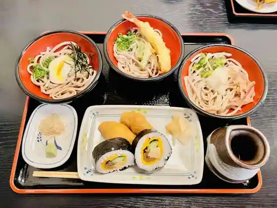
Seseragi Tei
パン有本
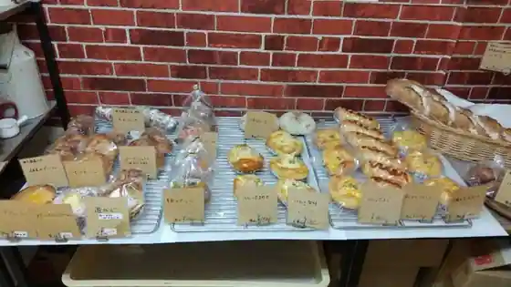
Bakery Arimoto
Sora
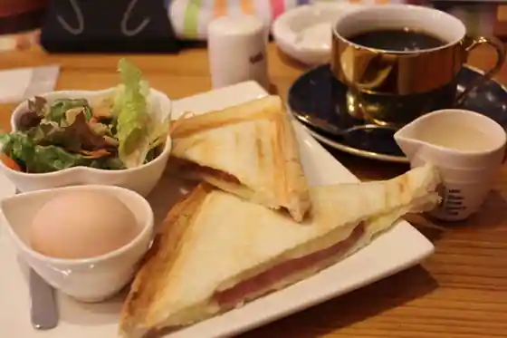
Sora
しあわせの黄色いハンカチ
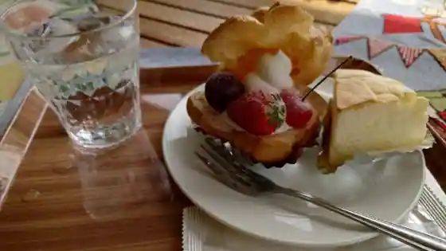
Shiawaseno Kiroi Hankachi
台湾料理 豊源
Taiwan Ryori Yutaka Gen
市川サービスエリア 上り線 軽食コーナー
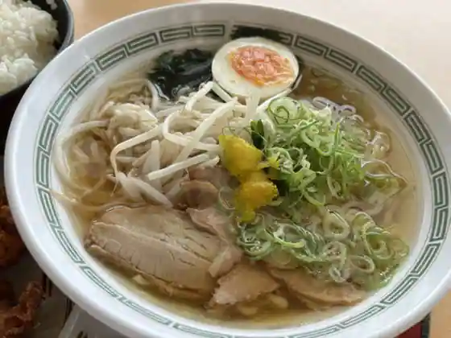
Ichikawa Sabisueria Nobori Sen Keishoku Kona
フォレスト市川ゴルフ倶楽部 レストラン
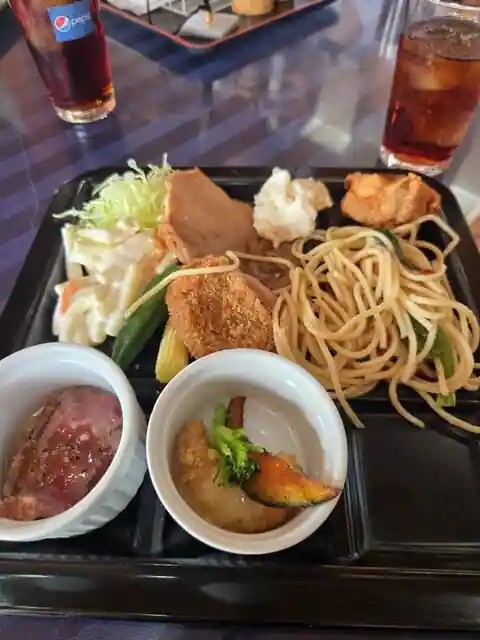
Foresuto Ichikawa Gorufu Kurabu Restaurant
後藤パン
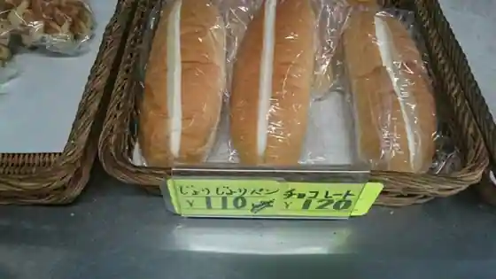
Goto Bakery
卵らんハウス
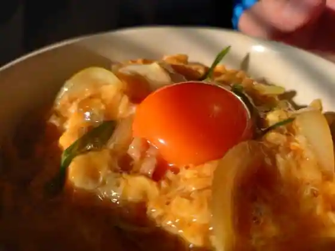
Tamago Ran House
マネキダイニング 市川SA北行き店
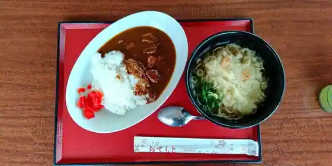
Maneki Dining Ichikawa SA Kitayuki Ki
繁乃家
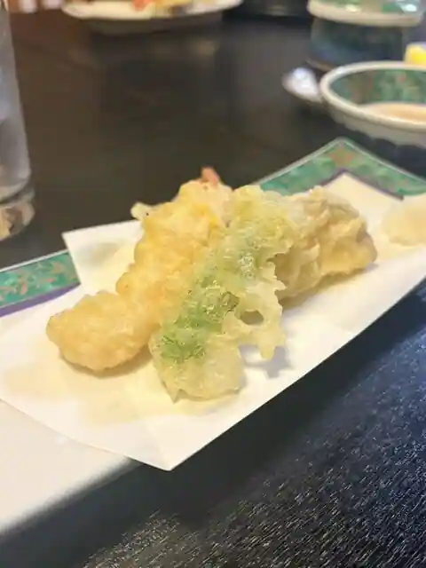
Han No Ie
松里
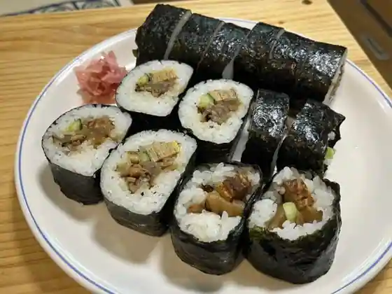
Matsusato
agio
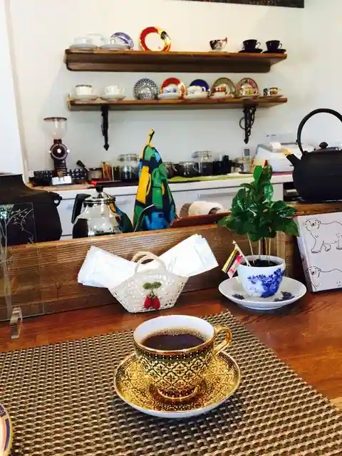
agio
峠
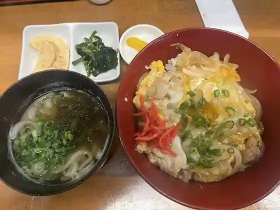
Toge
喫茶 かよ
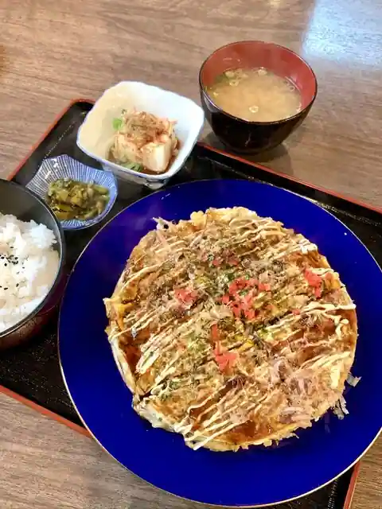
Kissa Kayo
そば処 福笑囲
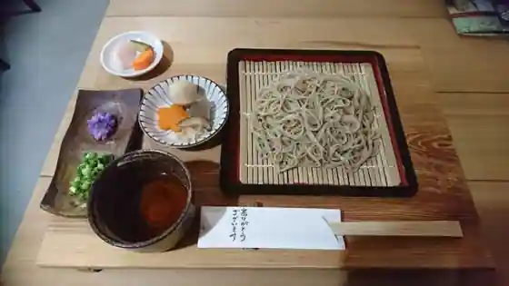
Soba Tokoro Fuku Warai I
エアーズガーデン
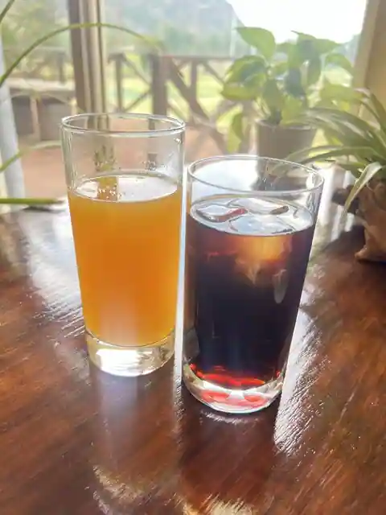
Eazu Garden
市川神姫レストラン
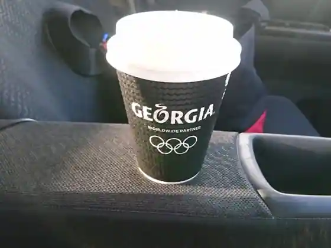
Ichikawa Shinki Restaurant
あまじ助六
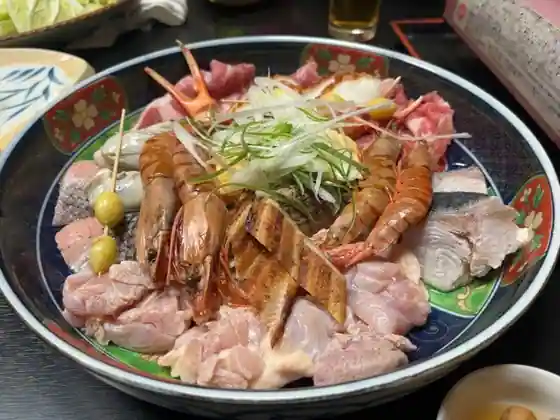
Amaji Sukeroku